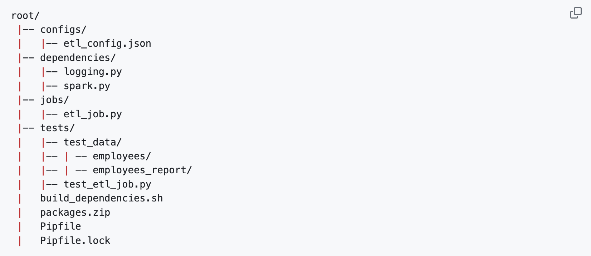

The Basic Workflow of an ETL Pipeline
- The Basic Workflow of an ETL Pipeline
- The Basic Structure of the ETL pipeline
- The Structure of an ETL job
- Passing Configuration Parameters to the ETL Job
- Packaging ETL Job Dependencies
- Running the ETL Job
- Debugging Spark Jobs Using start_spark
- Automated Testing
- Managing Project Dependencies using Pipenv
- Installing Pipenv
- Pipenv Shells
- Automatic Loading of Environment Variables
This blog will go through some basics and steps of going through a ETL pipeline project.
Below constitutes what we consider to be a 'best practices' approach to writing ETL jobs using Apache Spark and its Python ('PySpark') APIs. This project addresses the following topics:
How to structure ETL code in such a way that it can be easily tested and debugged; How to pass configuration parameters to a PySpark job; How to handle dependencies on other modules and packages; and, what constitutes a 'meaningful' test for an ETL job.
The Basic Structure of the ETL pipeline

The Structure of an ETL job
We suggest isolating the "Transformation" step from the "Extract" and "Load" processes into a separate function that accepts input data arguments in the form of DataFrames and returns the converted data as a single DataFrame in order to make debugging and testing easier.
The data extraction, data passing to the transformation function, and loading (or writing) the results to their final destination are the tasks covered by the code that surrounds the use of the transformation function in the main() job function.
Testing is made easier because test or mock data may be directly validated and supplied to the transformation function. This is not possible if all ETL code is included in main() and references sources and destinations of production data.
In general, idempotent transformation functions ought to be created. In technical terms, this means that until the input data changes, successive applications of the transformation function should not affect the basic condition of the output data.
One of the main benefits of idempotent ETL jobs is their ability to be scheduled to run repeatedly (for example, by use cron to start the spark-submit command above on a predetermined timetable), eliminating the need to account for possible dependencies on other ETL processes finishing successfully.
Passing Configuration Parameters to the ETL Job
Although it is possible to pass arguments to etl_job.py, as you would for any generic Python module running as a 'main' program - by specifying them after the module's filename and then parsing these command line arguments - this can get very complicated, very quickly, especially when there are lot of parameters (e.g. credentials for multiple databases, table names, SQL snippets, etc.).
This also makes debugging the code from within a Python interpreter extremely complicated, as you don't have access to the command line arguments that would ordinarily be passed to the code, when calling it from the command line.
A much more effective solution is to send Spark a separate file - e.g. using the --files configs/etl_config.json flag with spark-submit - containing the configuration in JSON format, which can be parsed into a Python dictionary in one line of code with json.loads(config_file_contents). Testing the code from within a Python interactive console session is also greatly simplified, as all one has to do to access configuration parameters for testing, is to copy and paste the contents of the file - e.g.,
import json
config = json.loads("""{"field": "value"}""")For the exact details of how the configuration file is located, opened and parsed, please see the start_spark() function in dependencies/spark.py (also discussed further below), which in addition to parsing the configuration file sent to Spark (and returning it as a Python dictionary), also launches the Spark driver program (the application) on the cluster and retrieves the Spark logger at the same time.
Packaging ETL Job Dependencies
In this project, functions that can be used across different ETL jobs are kept in a module called dependencies and referenced in specific job modules using, for example,
from dependencies.spark import start_sparkThis package, together with any additional dependencies referenced within it, must be copied to each Spark node for all jobs that use dependencies to run. This can be achieved in one of several ways:
1. send all dependencies as a zip archive together
with the job, using `--py-files` with Spark submit;
2. formally package and upload dependencies to
somewhere like the PyPI archive (or a private version)
and then run pip3 install dependencies on each node; or,
3. a combination of manually copying new modules
(e.g. dependencies) to the Python path of each node
and using pip3 install for additional dependencies
(e.g. for requests).Option (1) is by far the easiest and most flexible approach, so we will make use of this for now. To make this task easier, especially when modules such as dependencies have additional dependencies (e.g. the requests package), we have provided the build_dependencies.sh bash script for automating the production of packages.zip, given a list of dependencies documented in Pipfile and managed by the pipenv python application (discussed below).
Running the ETL Job
Assuming that the $SPARK_HOME environment variable points to your local Spark installation folder, then the ETL job can be run from the project's root directory using the following command from the terminal,
$SPARK_HOME/bin/spark-submit \
--master local[*] \
--packages 'com.somesparkjar.dependency:1.0.0' \
--py-files packages.zip \
--files configs/etl_config.json \
jobs/etl_job.pyBriefly, the options supplied serve the following purposes:
--master local[*] - the address of the Spark cluster
to start the job on. If you have a Spark cluster in
operation (either in single-executor mode locally,
or something larger in the cloud) and want to send
the job there, then modify this with the appropriate
Spark IP - e.g. spark://the-clusters-ip-address:7077;
--packages 'com.somesparkjar.dependency:1.0.0,...' -
Maven coordinates for any JAR dependencies required
by the job (e.g. JDBC driver for connecting to a
relational database);
--files configs/etl_config.json - the (optional) path
to any config file that may be required by the ETL job;
--py-files packages.zip - archive containing Python
dependencies (modules) referenced by the job; and,
jobs/etl_job.py - the Python module file containing
the ETL job to executeFull details of all possible options can be found here. Note, that we have left some options to be defined within the job (which is actually a Spark application) - e.g. spark.cores.max and spark.executor.memory are defined in the Python script as it is felt that the job should explicitly contain the requests for the required cluster resources.
Debugging Spark Jobs Using start_spark
It is not practical to test and debug Spark jobs by sending them to a cluster using spark-submit and examining stack traces for clues on what went wrong. A more productive workflow is to use an interactive console session (e.g. IPython) or a debugger (e.g. the pdb package in the Python standard library or the Python debugger in Visual Studio Code).
In practice, however, it can be hard to test and debug Spark jobs in this way, as they implicitly rely on arguments that are sent to spark-submit, which are not available in a console or debug session.
We wrote the start_spark function - found in dependencies/spark.py - to facilitate the development of Spark jobs that are aware of the context in which they are being executed - i.e. as spark-submit jobs or within an IPython console, etc.
The expected location of the Spark and job configuration parameters required by the job, is contingent on which execution context has been detected. The docstring for start_spark gives the precise details,
Automated Testing
In order to test with Spark, we use the pyspark Python package, which is bundled with the Spark JARs required to programmatically start-up and tear-down a local Spark instance, on a per-test-suite basis (we recommend using the setUp and tearDown methods in unittest.TestCase to do this once per test-suite). Note, that using pyspark to run Spark is an alternative way of developing with Spark as opposed to using the PySpark shell or spark-submit.
Given that we have chosen to structure our ETL jobs in such a way as to isolate the 'Transformation' step into its own function (see 'Structure of an ETL job' above), we are free to feed it a small slice of 'real-world' production data that has been persisted locally - e.g. in tests/test_data or some easily accessible network directory - and check it against known results (e.g. computed manually or interactively within a Python interactive console session).
To execute the example unit test for this project run,
pipenv run python -m unittest tests/test_*.pyManaging Project Dependencies using Pipenv
We use pipenv for managing project dependencies and Python environments (i.e. virtual environments). All direct packages dependencies (e.g. NumPy may be used in a User Defined Function), as well as all the packages used during development (e.g. PySpark, flake8 for code linting, IPython for interactive console sessions, etc.), are described in the Pipfile. Their precise downstream dependencies are described in Pipfile.lock.
Installing Pipenv
To get started with Pipenv, first of all download it - assuming that there is a global version of Python available on your system and on the PATH, then this can be achieved by running the following command,
pip3 install pipenvPipenv is also available to install from many non-Python package managers. For example, on OS X it can be installed using the Homebrew package manager, with the following terminal command,
brew install pipenvFor more information, including advanced configuration options, see the official pipenv documentation.
Pipenv Shells
Prepending pipenv to every command you want to run within the context of your Pipenv-managed virtual environment can get very tedious. This can be avoided by entering into a Pipenv-managed shell,
pipenv shellThis is equivalent to 'activating' the virtual environment; any command will now be executed within the virtual environment. Use exit to leave the shell session.
Automatic Loading of Environment Variables
Pipenv will automatically pick-up and load any environment variables declared in the .env file, located in the package's root directory. For example, adding,
SPARK_HOME=applications/spark-2.3.1/bin
DEBUG=1Will enable access to these variables within any Python program -e.g. via a call to os.environ['SPARK_HOME']. Note, that if any security credentials are placed here, then this file must be removed from source control - i.e. add .env to the .gitignore file to prevent potential security risks.